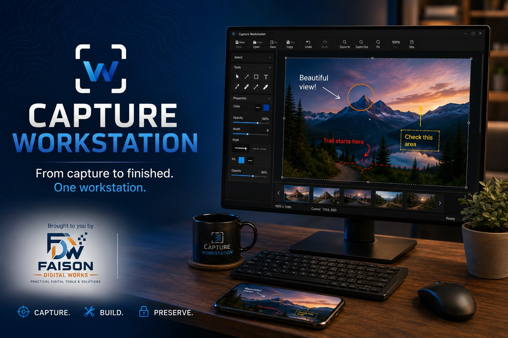
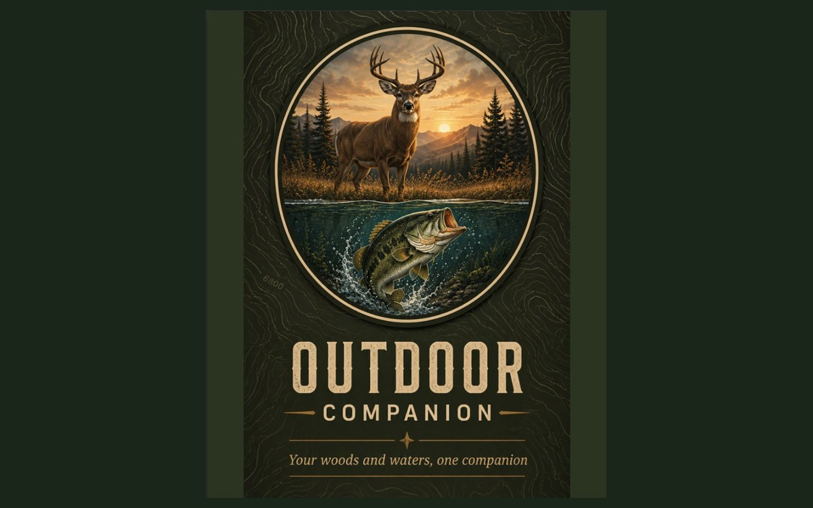

Capture Workstation
From capture to finished. One workstation.
A Windows desktop app for capturing, resizing, annotating and preparing screenshots and images — without bouncing between four different tools to finish one picture.
Practical digital tools and solutions.
An independent software company in Ivor, Virginia, building tools that do a real job and get out of the way — no accounts to create, no data harvested, no subscription to being measured.
Our software
Each one built to solve a specific problem properly, rather than a little of everything.

From capture to finished. One workstation.
A Windows desktop app for capturing, resizing, annotating and preparing screenshots and images — without bouncing between four different tools to finish one picture.

Your woods and waters, one companion.
A mobile companion for time spent outdoors. More detail will be posted here as it gets closer to release.
Record today. Preserve tomorrow.
A mobile app for recording and photographing historic places wherever you find them — keeping the notes and images together and organized enough to be useful later.
About
Faison Digital Works, LLC is a Virginia limited liability company. It exists to build and publish practical software — desktop and mobile applications that solve an actual problem for the person using them.
The same person who writes the software answers the support email. When you report a bug, it reaches the developer.
How we build
Help
One place for every product. Report a problem, suggest a feature, or ask a question — it reaches the person who writes the software.
The support form asks for the few details that save a round of back-and-forth — which product, what kind of message, and the version you're running.
Inside Capture Workstation, Report a Problem and Suggest a Feature reach us the same way.